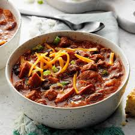

Beef Brisket Chilli
Home

Description
Here is my pulled beef brisket chilli recipe I made you in Croyde 2020!
For my Mexican night, I converted the standard minced meat chilli to a
show stopper with chunky pieces of tender beef pulled apart and infused in
a simple Mexican marinade inspired. The brisket piece is a cheap cut from
a cow that runs from the bottom of the neck down under the ribs. It
requires slow cooking due to the amount of connective tissue in the
muscle. Cows don’t have collarbones, so this muscle must carry up to 60%
of the weight of the cow! In the UK, it’s normally braised or stewed in a
broth with root vegetables, and in the USA, they love to barbeque it with
a local rub.
Ingredients
- 1 Beef brisket, boneless
- 4 Cloves Garlic, chopped
- 1 tin Chickpeas
- 2 tin Chopped tomatoes
- 2 tsp Smoked paprika
Method
- Turn on your slow cooker to high and prepare all your vegetables.
-
Then score your beef brisket and season well. Place in a hot frying pan
with a glug of oil and cook for 3 minutes on each side until charred. If
the bone is available, keep it and add it to your slow cooker for extra
flavour. If you don't have a slow cooker, I would recommend getting one!
-
Add the beef and all the juices from the pan (wash out with a splash of
water) into the slow cooker, followed by the marinade, tinned tomatoes,
black coffee, coriander stalks, and vegetables. Cover with the lid on a
low level and head off to work (8hrs) or a high heat for 4-5 hours. Not
all slow cookers and hobs give off the same heat. If, after the
allocated time and the beef isn't pulling apart into beautiful chunks,
turn up the heat until it does.
- OVEN: cook your chilli with a lid for 4 hours at 180 c.
-
The beef will be ready when you can pull it apart with forks. Now add
the drained chickpeas and cook for another 10 minutes. Taste it and see
if it needs any more seasoning.
-
Serve with white fluffy rice, crumbled feta, chopped coriander and
sliced red chilli pieces. Serve up and enjoy with a cold beer! BIFF,
BOSH, CHILLI NOSH!